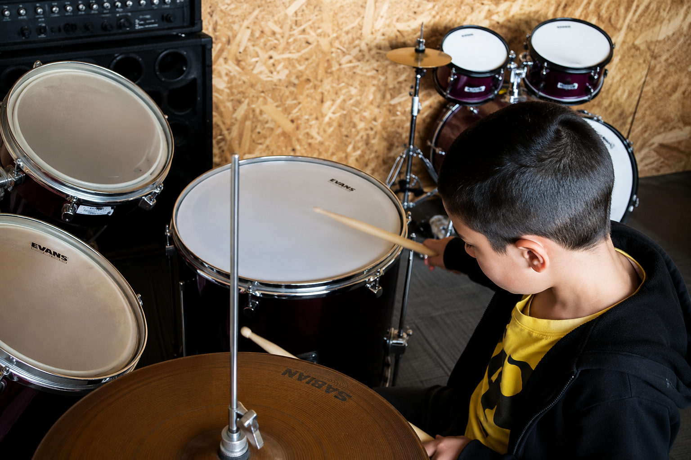

Técnica y control
Aprende postura, agarre de baquetas, rebote y control para tocar de forma cómoda y precisa.
Desarrolla coordinación, precisión, ritmo y control mientras aprendes a expresarte a través de la percusión.

La batería es un instrumento que combina ritmo, coordinación y precisión. En KIRU, cada estudiante desarrolla progresivamente el control de manos y pies mientras aprende a construir bases rítmicas y acompañar diferentes estilos musicales.
Las clases están pensadas para avanzar desde los fundamentos hasta una interpretación cada vez más segura, musical y expresiva, respetando el proceso y nivel de cada estudiante.
Desarrollarás habilidades esenciales para comprender el ritmo, controlar el instrumento y tocar de manera cada vez más musical.
Aprende postura, agarre de baquetas, rebote y control para tocar de forma cómoda y precisa.
Trabaja el sentido del tiempo, patrones rítmicos y estabilidad para construir una base musical sólida.
Desarrolla independencia entre manos y pies para integrar bombo, redoblante, toms y platillos.
Aplica lo aprendido en canciones y ejercicios para tocar con dinámica, intención y seguridad.
El aprendizaje avanza de acuerdo con el nivel y desarrollo de cada estudiante.
La técnica se trabaja directamente sobre el instrumento mediante ejercicios y repertorio.
Comprende el ritmo y su función dentro de una canción, no solo la ejecución de golpes aislados.
Desarrolla seguridad, precisión y expresión mientras construyes tu propio progreso musical.
No necesitas experiencia previa. El curso está pensado tanto para quienes empiezan desde cero como para estudiantes que quieren fortalecer su técnica, coordinación y musicalidad.
Cada instrumento es una nueva forma de expresarte. Encuentra el que más conecta contigo.
Agenda tu primera clase gratuita y conoce cómo se vive la música en KIRU.